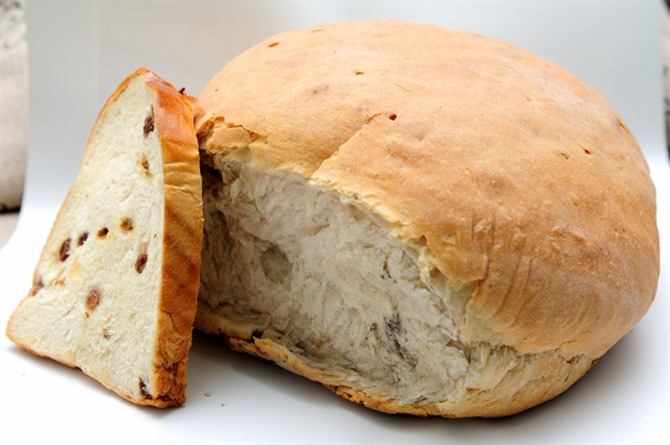

一．马迭尔冰棍
马迭尔冰棍，是哈尔滨中央大街特色冷饮。马迭尔品牌（Modern）由法籍犹太人开斯普于1906年在哈尔滨创建，距今有100多年的历史，其名称“马迭尔”从清朝到民国到解放后，一直沿用未改。当时堪称“新艺术”的代表作，故名“马迭尔”，意为摩登的、时髦的，成为早期东北专供社会上层人物栖身和娱乐的场所。到哈尔滨不尝马迭尔冰棍，就相当于到了北京没去长城和故宫，都会被人说白去一回。“甜而不腻，冰中带香”是马迭尔冰棍的主要特点。
二．哈尔滨红肠
哈尔滨红肠，俄语译音为“里道斯”，“里道斯”和哈尔滨红肠是一个概念。许多哈尔滨人称哈尔滨红肠为“里道斯红肠”，也有人喜欢用“哈红肠”的简称。“里道斯”原产于东欧的立陶宛。1898年中东铁路修建后，外国人大量进入哈尔滨，也将肉灌制品带到了哈尔滨。哈红肠可谓是哈尔滨美食之一，如果亲去了哈尔滨可一定要品尝此美味哦。
三．锅包肉别称锅爆肉
锅包肉，原名“锅爆肉”，是正宗冰城（哈尔滨）美食，出自哈尔滨道台府府尹杜学赢专用厨师，“滨江膳祖”———郑兴文之手。现在，“滨江膳祖”的曾孙在哈尔滨花园街48号开办了自己的美食（老厨家），传承了滨江美食文化独有的特点。要想吃到正宗锅包肉，只能在哈尔滨吃得到。四．俄罗斯大列巴
大列巴是哈尔滨最有个性的特产，它被称为哈尔滨风味食品一绝。大列巴之名，鲜明地体现了中西文化之融合，“列巴”是俄罗斯语“面包”，因为个大，所以前面冠以中文的“大”字。初次见“大列巴”，你会被这硕大无比的面包所惊叹，作家秦牧当年来哈尔滨有句“面包像锅盖”的比喻，说的就是具有百年余韵的秋林大列巴。它的体积比半个篮球还大一圈，标准直径在23－26厘米之间，厚度也在16厘米以上，面包净重有2公斤，它的膨松程度比一般的面包要厚重些，拎在手里沉甸甸的，所以一般从哈尔滨带这特产礼物送人可是礼重情义更重的。
